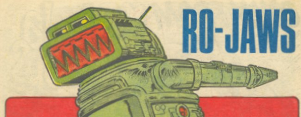

The sewer-droid pal of Hammerstein in the Ro-Busters series became an editorial figure before folding back into the A.B.C. Warriors by way of Nemesis. This lists his one solo adventure and some editorial posters and skips his many appearances in the other strips.
Art by Kevin O'Neill
| Story Title | Parts | Pages | w indicates a wraparound coverCovers | Year(s) | Issues | Writer | Artist | Colourist | Letterer |
|---|---|---|---|---|---|---|---|---|---|
Linked to Ro‑BustersRo-Jaws | 1 | 6 | 0 | 1979 | SLA'80 | unknown | unknown | [b&w] | unknown |
| >> Posters << | |||||||||
Star Pin‑Up.Ro-Jaws | 1 | 1 | 0 | 1979 | 106 | n/a | Kevin O'Neill | <-- | n/a |
Star Pin‑Up.Ro-Jaws | 1 | 1 | 0 | 1981 | 208 | n/a | Kevin O'Neill | <-- | n/a |
Linked to Tharg the Mighty Star Pin‑Up. Tharg has welded Ro‑Jaws' mouth shut. Follow‑up to poster in prog 208. Tharg the Welder - The Editor Strikes Back | 1 | 1 | 0 | 1981 | 215 | n/a | Robin Smith | <-- | n/a |
From The A.B.C. Warriors ArtTill Next Time, Nerks! | 1 | 1 | 0 | 2023 | 2323 | n/a | Simon Bisley | <-- | n/a |
| year | episodes | pages |
| 1977 | 0 | 0 |
| 1978 | 0 | 0 |
| 1979 | 1 | 6 |
| 1980 | 0 | 0 |
| 1981 | 0 | 0 |
| 1982 | 0 | 0 |
| 1983 | 0 | 0 |
| 1984 | 0 | 0 |
| 1985 | 0 | 0 |
| 1986 | 0 | 0 |
| 1987 | 0 | 0 |
| 1988 | 0 | 0 |
| 1989 | 0 | 0 |
| 1990 | 0 | 0 |
| 1991 | 0 | 0 |
| 1992 | 0 | 0 |
| 1993 | 0 | 0 |
| 1994 | 0 | 0 |
| 1995 | 0 | 0 |
| 1996 | 0 | 0 |
| 1997 | 0 | 0 |
Comic strip data (excludes other content):